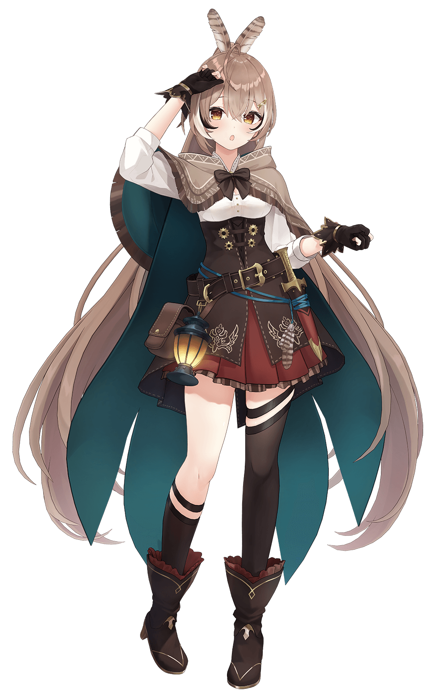

Nanashi Mumei七詩ムメイ
“Oh hi! Hoo’s this? Nanashi Mumei!”
The Guardian of Civilization, a traveling owl who has borne witness to numerous events. Even though glimpses of past memories—seen and forgotten throughout her endless journey—occasionally surface, she is now a lovely girl who relishes each and every day. When once she was just an observer, she now enjoys her everyday interactions with civilizations and its people. And soon the ordinary, ever-present daily life, shall also weave itself into the tapestry of civilization.
DATA
- Birthday
- August 4
- Debut Stream
- August 23, 2021
- Height
- 156 cm
- Unit
- hololive English -Promise-
- Illustrator
- azure
- Goals
- -Have a song in a rhythm game
-Learn Japanese (again)
-Collab with senpais
-Improve and learn new skills
-Write a song on the guitar
- Fan Name
- Hoomans
- Hashtags
-
Stream Tag: #watchMEI
Fan Art: #drawMEI #ムメ絵
Meme: #memeMEI
- Likes
- Obtaining knowledge, vegetable broth, drawing stuff, singing things
- Dislikes
- Forgetting things, mud, printers, mosquitoes